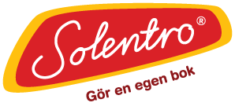
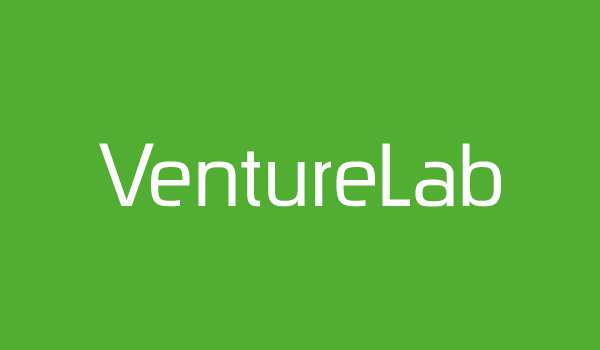

Academic Solutions

Om oss:
AcademicSolutions mål är att ge verksamheter snabbare och bättre kontakter med studenter som ska ha praktik, skriva examensarbete eller driva ett projekt. En bra kontakt mellan studenter och företag är en win-win-lösning där studenternas kompetens kommer till användning i praktiken. Tjänsten är gratis för studenter. De får kontakter med företag som samtidigt får möjlighet att utveckla sin verksamhet.
Kontakt:
Hemsida: www.academicsolutions.com
Device Radio
Om oss:
We transform the industry with our high-level IoT infrastructure that bridges traditional hardware with remote applications and platforms.
Kontakt:
Hemsida: www.deviceradio.com
Mail: christian@deviceradio.com
Telefon: +46735065681
Solentro
Om oss:
Solentro grundades av bröderna Hampus & Tobias Schildfat och lanseringen skedde i början på 2008. I TV-serien Draknästet fick de stor uppmärksamhet när de nobbade drakarna och en investering på 1,5 miljoner kronor. Idag är Solentro ett globalt företag när det gäller att erbjuda möjligheten att göra en egen bok och få den tryckt och hemskickad. Solentro erbjuder även författarpaket och bistår med tryck- och utgivningstjänster vid egenutgivning. Solentro bokskapartjänst är helt webbaserad och ingen nedladdning av program behövs. Solentro finns på tio olika språk med kunder i över 30 länder. Vår vision är att vara världens bästa plats för att göra egna böcker.
Kontakt:
Hemsida: www.solentro.se
Mail: hampus@solentro.com
Telefon: 040 - 44 55 35
Venture Lab
Om oss:
VentureLab är en del av Lunds universitet och arbetar för att uppmuntra entreprenörskap och hjälpa de studenter och nyexaminerade som funderar på att starta eget. Sedan starten 2001 har vi hjälpt tusentals studenter att gå från idé till verklighet genom att erbjuda:
Kontakt:
Hemsida: www.solentro.se
Mail: patricia.szolnoki@venturelab.lu.se
Telefon: +46703359895